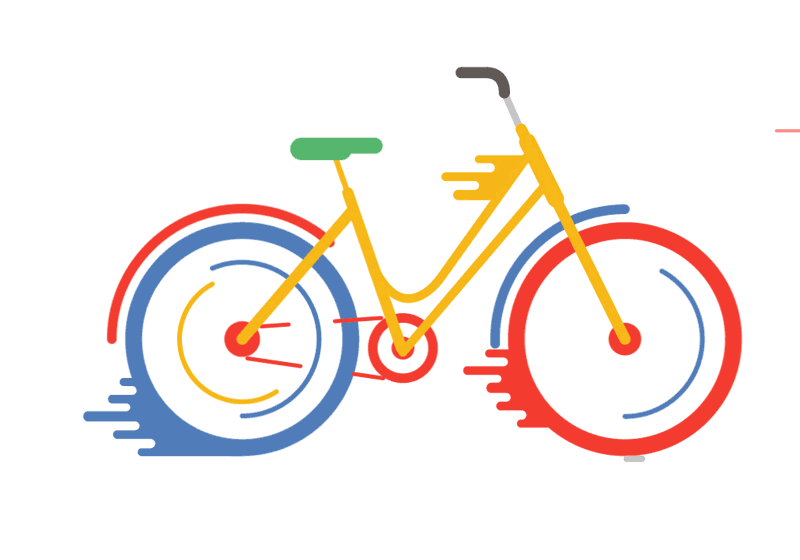

NBIKE REPARATION ET REVISION DES VELO INCHA
3 RAISON POUR REPARER VOTRE VELO
Réparations de vélo abordables
Nous offrons des réparations rapides et abordables pour tous les types de vélos. Contactez-nous pour un devis gratuit.

Conseils d'experts en entretien de vélo
Notre équipe de mécaniciens expérimentés est disponible pour des conseils et des astuces pour l'entretien de votre vélo. Nos experts peuvent vous aider à prolonger la durée de vie de votre vélo .
Conseils d'experts en entretien de vélo
Notre équipe de mécaniciens expérimentés est disponible pour des conseils et des astuces pour l'entretien de votre vélo. Nos experts peuvent vous aider à prolonger la durée de vie de votre vélo .

Solutions écologiques et économiques
Notre entreprise est fière d'offrir des solutions de réparation de vélos durables et écologiques qui économisent de l'argent à long terme. En choisissant nos services, vous pouvez contribuer à un avenir plus vert et économiser de l'argent en même temps.
Le vélo, notre passion
Notre entreprise de réparation de vélos a commencé comme une petite projet il y a 1an. Depuis lors, nous avons élargi notre portée et nos compétences pour devenir l'un des principaux fournisseurs de services de réparation de vélos dans notre région. Notre équipe d'experts en mécanique de vélos possède une expérience et des compétences approfondies dans tous les aspects de la réparation de vélos, y compris les réparations électriques et les mises à niveau personnalisées. Nous sommes fiers de notre engagement envers le service à la clientèle et nous nous engageons à offrir des réparations de qualité dans un délai raisonnable et à des prix compétitifs.
Notre entreprise de réparation de vélos a commencé comme une petite projet il y a 1an. Depuis lors, nous avons élargi notre portée et nos compétences pour devenir l'un des principaux fournisseurs de services de réparation de vélos dans notre région. Notre équipe d'experts en mécanique de vélos possède une expérience et des compétences approfondies dans tous les aspects de la réparation de vélos, y compris les réparations électriques et les mises à niveau personnalisées. Nous sommes fiers de notre engagement envers le service à la clientèle et nous nous engageons à offrir des réparations de qualité dans un délai raisonnable et à des prix compétitifs.
Expertise en réparation de vélos
Notre entreprise de réparation de vélos est spécialisée dans les réparations et l'entretien de tous les types de vélos, des vélos de montagne aux vélos électriques. Nous sommes dédiés à fournir des services de haute qualité et à satisfaire les besoins de chaque client. Nous avons une équipe d'experts en mécanique de vélos hautement qualifiée qui utilise les derniers équipements et technologies pour effectuer toutes les réparations et mises à niveau nécessaires. Nous sommes également fiers de notre excellent service clientèle et de notre engagement envers la satisfaction du client.
Notre entreprise de réparation de vélos est spécialisée dans les réparations et l'entretien de tous les types de vélos, des vélos de montagne aux vélos électriques. Nous sommes dédiés à fournir des services de haute qualité et à satisfaire les besoins de chaque client. Nous avons une équipe d'experts en mécanique de vélos hautement qualifiée qui utilise les derniers équipements et technologies pour effectuer toutes les réparations et mises à niveau nécessaires. Nous sommes également fiers de notre excellent service clientèle et de notre engagement envers la satisfaction du client.
Le choix judicieux pour les cyclistes exigeants
Notre entreprise de réparation de vélos offre une gamme complète de services de réparation et d'entretien de vélos pour tous les types de cyclistes. Nous avons une équipe d'experts en mécanique de vélos passionnés et expérimentés qui sont dévoués à fournir des réparations et des services de haute qualité. Nous nous engageons à offrir à nos clients des solutions rapides et efficaces pour leurs besoins de réparation de vélos, y compris les réparations électriques et les mises à niveau personnalisées. Nous sommes fiers de notre engagement envers le service clientèle et nous nous engageons à fournir des services de qualité supérieure à des prix compétitifs.
Notre entreprise de réparation de vélos offre une gamme complète de services de réparation et d'entretien de vélos pour tous les types de cyclistes. Nous avons une équipe d'experts en mécanique de vélos passionnés et expérimentés qui sont dévoués à fournir des réparations et des services de haute qualité. Nous nous engageons à offrir à nos clients des solutions rapides et efficaces pour leurs besoins de réparation de vélos, y compris les réparations électriques et les mises à niveau personnalisées. Nous sommes fiers de notre engagement envers le service clientèle et nous nous engageons à fournir des services de qualité supérieure à des prix compétitifs.
Vélos sur mesure
Nous sommes une entreprise de réparation de vélos artisanale qui se distingue par notre attention aux détails et notre expertise en matière de mécanique de vélos. Nous sommes fiers d'offrir des services personnalisés à chaque client, allant des simples réparations aux mises à niveau personnalisées et à la restauration de vélos anciens. Nous sommes également compétitifs en termes de prix et nous nous efforçons de fournir des services de qualité supérieure à des tarifs abordables. Nous avons une équipe de mécaniciens de vélo passionnés et qualifiés qui se consacrent à offrir à chaque client une expérience de réparation de vélo exceptionnelle.
Nous sommes une entreprise de réparation de vélos artisanale qui se distingue par notre attention aux détails et notre expertise en matière de mécanique de vélos. Nous sommes fiers d'offrir des services personnalisés à chaque client, allant des simples réparations aux mises à niveau personnalisées et à la restauration de vélos anciens. Nous sommes également compétitifs en termes de prix et nous nous efforçons de fournir des services de qualité supérieure à des tarifs abordables. Nous avons une équipe de mécaniciens de vélo passionnés et qualifiés qui se consacrent à offrir à chaque client une expérience de réparation de vélo exceptionnelle.
Qualité d'artisanat
Notre entreprise de réparation de vélos se spécialise dans les services de qualité artisanale pour les cyclistes les plus exigeants. Nous utilisons des techniques de mécanique de vélos de pointe et des outils de précision pour offrir des services de réparation et d'entretien exceptionnels. Nous sommes compétitifs en termes de prix, mais nous ne compromettons jamais la qualité. Nous sommes fiers de notre artisanat et de notre attention aux détails, et nous sommes dévoués à fournir des services de qualité supérieure à chaque client.
Notre entreprise de réparation de vélos se spécialise dans les services de qualité artisanale pour les cyclistes les plus exigeants. Nous utilisons des techniques de mécanique de vélos de pointe et des outils de précision pour offrir des services de réparation et d'entretien exceptionnels. Nous sommes compétitifs en termes de prix, mais nous ne compromettons jamais la qualité. Nous sommes fiers de notre artisanat et de notre attention aux détails, et nous sommes dévoués à fournir des services de qualité supérieure à chaque client.
Engagement envers l'artisanat
En tant qu'étudiant motivé, j'ai compris l'importance de l'innovation et de l'adaptation aux besoins futurs des consommateurs. C'est pourquoi j'ai choisi de rejoindre cette entreprise dynamique qui est à la pointe de l'industrie de la réparation de vélos. Je suis convaincu que je peux apporter une contribution significative à l'entreprise en apportant des idées novatrices et en travaillant dur pour atteindre les objectifs communs.
En tant qu'étudiant motivé, j'ai compris l'importance de l'innovation et de l'adaptation aux besoins futurs des consommateurs. C'est pourquoi j'ai choisi de rejoindre cette entreprise dynamique qui est à la pointe de l'industrie de la réparation de vélos. Je suis convaincu que je peux apporter une contribution significative à l'entreprise en apportant des idées novatrices et en travaillant dur pour atteindre les objectifs communs.
- Telephone
- +33-665-097-644
- Gmail
- nawfalbahassine@gmail.com
- Sur place
- 7 rue clemenceau, Pau